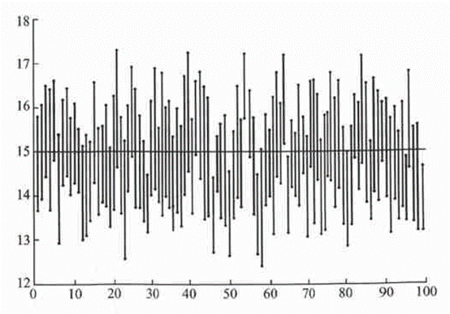

Statistics
-
DO NOT, DO NOT even try to compare the upper/lower limits of confidence intervals. A risk factor with upper limit of CI in 100s, is not riskier than another one with upper limit in 10s.
The confidence interval is just a statistical value you get from this one time trial. If you repeat the trial, you will get a different confidence interval. That's the same concept
as sample average. You get a different sample average every time, because the samples are different.
Back to the definition of a confidence interval. A 95% confidence interval means that the actual value you are looking for has a 95% chance of being within this interval. Remember,
the actual value does NOT change. Therefore, the better way of defining confidence interval is: A range that has 95% chance covering the actual value. If you repeat your research 100
times, you get 100 different 95% confidence intervals, and on average, 5 of them will not cover the actual value. Within any of your confidence intervals, the actual value could be
ANYWHERE, it does NOT change when the upper limit is super high or lower limit is very low.

-
Using bootstrap method to calculate confidence interval is a modern method relying heavily on the computational capability, with minimal necisity of understanding the mathmatical
model of your statistics. If you have big enough dataset, and strong enough computational capability, you should be able to give any statistics a confidence interval. MIT has a good
tutorial on bootstrap method.
-